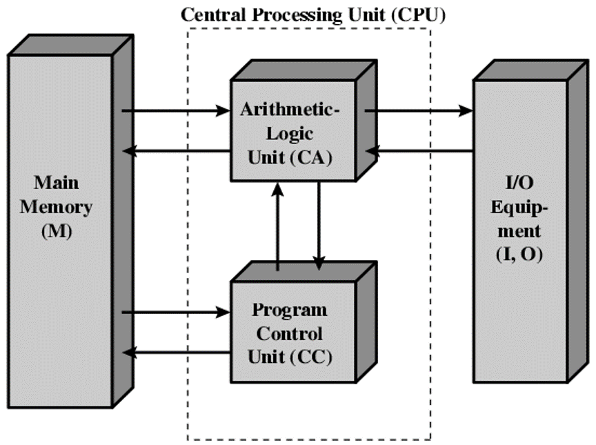
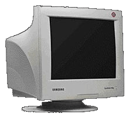
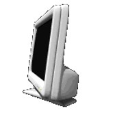
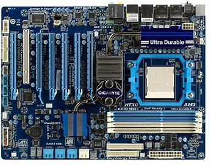

programs, or output for future useprogrammable, electronic device that accepts data, performs operations, presents the results, and can store the data or results Input entering data into the computer Processing performing operations on the data Output presenting the results Storage saving data
| device type | ex |
|---|---|
| outputs | Monitor Printer Speaker Plotter |
| inputs | Keyboard Mouse Trackball, touchpad, mouse stick Microphone |
Cathode-ray tube (CRT)– Resemble televisions; use picture tube technology; inexpensive, but they take up desk space and use a lot of energy.
Liquid Crystal Display (LCD or flat-panel)– Cells sandwiched between two transparent layers form images; used for notebook computers, PDAs, cellular phones, and personal computers; expensive, and they take up less desk space and use less energy than CRT monitors
 It holds and allows communication between many of the electronic components of a system, such as the central processing unit (CPU) and memory, and provides connectors for other peripherals. It is on the size of A4 paper, its color is green or gold. On which we can distinguish the following components
 home page